Using Portal Pack 3.0 Plugins to Create Portlets on NetBeans 6.5 IDE
As a set of plugins for NetBeans (IDE), the Portal Pack plugins
support full life-cycle of portlet application development inside NetBeans. Using this tool portlet developers
can develop, package, deploy, and test portlets inside their NetBeans IDE. By automatic
code and Deployment Descriptor generation, this tool helps developers to develop portlets quickly.
Portal Pack plugins provide a tight integration with portal servers (such as the
WebSynergy Server, Liferay Portal Server, Sun Java System Portal Server 7.x, The OpenPortal
Portlet Container on java.net) to support deployment and undeployment of portlets on both
the local and remote servers.
The following are the topics covered in this article:
This article discusses creating portlets on the NetBeans by using Portal Pack 3.0
plugins, and deploying them on Project WebSynergy. As a prerequisite, you need to
download and install the Project WebSynergy bundle. Also, Portal Pack 3.0 plugins need
to be installed on the NetBeans 6.5 IDE software.
As a prerequisite for installing Project WebSynergy, you need to install JDK1.5 or
JDK1.6 on your machine. You can download the platform specific jar for Project WebSynergy from
OpenPortal Community. Install the Project WebSynergy bundle and start the server.
Download Portal Pack 3.0 plugins from http://portalpack.netbeans.org.
To install the Portal Pack 3.0 plugins on the NetBeans 6.5 IDE:
Start the NetBeans IDE and choose Tools —> Plugins. The Plugins window pops up.
To add plugins from the download location, navigate to the Downloaded tab, and click the Add Plugins... button.
Click Install to start the installation.
Configuring the WebSynergy Server
The portlets created using Portal Pack plugins can be deployed on Project WebSynergy.
The following topics are discussed in this section:
To configure the WebSynergy Server
- Choose Servers from the Tools menu.
The Servers window appears.
Figure 1 Configuring the WebSynergy Server
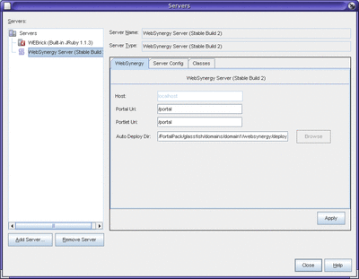
Click to Expand
- Select the Project WebSynergy Server from the Servers list, and click the Add
Server button.
The Add Server Instance window appears.
Figure 2 Configuring the WebSynergy Server
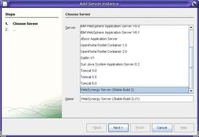
Click to Expand
- Select Project WebSynergy Server and click Next.
- Click the button next to the GlassFish Home, to choose the GlassFish Home
directory.
The Choose Directory window appears.
- Navigate to the 'glassfish' folder on your desktop, and click 'OK'.
The GlassFish Home, Domain Dir, Domain, Port, and Admin Port fields are populated.
- Type the password in the Password field.
Note:The default password is adminadmin.
Figure 3 Configuring the WebSynergy Server
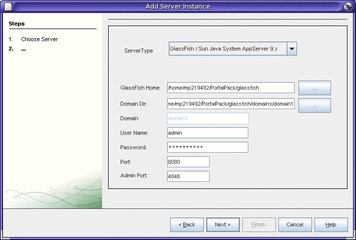
Click to Expand
- Click Next.
- Click Finish.
You have successfully configured your NetBeans IDE to deploy the portlets created on
it to your WebSynergy build.
To View the Portlets Deployed on WebSynergy Server
- Display the Services tab in the NetBeans IDE by clicking the tab name,
choosing 'Services' from the window menu, or pressing Ctrl-5.
- Expand WebSynergy Server under Servers.
- Expand 'Portlets'.
To view a particular portlet, right-click the portlet name and choose Show Portlet from
the pop-up menu.
Figure 4 Viewing the portlets deployed to WebSynergy Server
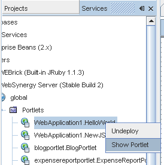
Creating Portlets by using Portal Pack 3.0 Plugins
You can create JSR 168/286 portlets, VisualWeb JSF portlets, and Ruby/PHP/Groovy portlets by
using Portal Pack 3.0 plugins on NetBeans IDE 6.5 software. To create portlets,
you need to create a Web Project with the Portlet Support framework. You
can have multiple portlets within a single Web Project.
The following topics are discussed in this section:
Creating a Project
You can create and delete projects within the NetBeans IDE. A project acts
as a container for portlets and portlet pages, and all other files
related to them.
To Create a Project
- Choose New Project from the File menu.
The New Project page appears.
- Choose Java Web and Web Applications respectively for Categories and Projects, and click Next.
Figure 5 Creating a Project
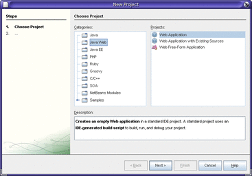
Click to Expand
- Specify a name for your project, and click Next.
Figure 6 Creating a Project
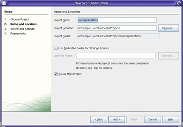
Click to Expand
- Select the Project WebSynergy Server as the server instance from the Server drop-down
menu.
Figure 7 Creating a Project
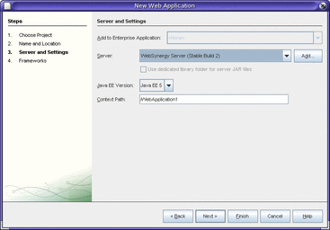
Click to Expand
- Select Portlet Support as the framework.
Choose Portlet Version 2.0, select the Create Portlet option, and click Finish.
Figure 8 Creating a Project
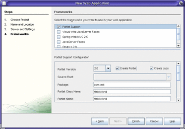
Click to Expand
Your new project is created. Also, a JSR168/286 portlet called Hello World is
also created by default.
Figure 9 Creating a Project
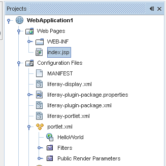
Whenever you create a new portlet page, or when you open an
existing portlet page, it opens in a new tab in the NetBeans IDE.
You can view and edit the page in full-screen mode or in regular
window by double-clicking the tab, or by clicking the Maximize Window button.
Creating JSR168/286 Portlets and Portlet Pages
The NetBeans IDE 6.5 software creates a JSR168/286 portlet by default when you
create a new project in the NetBeans IDE.
The following topics are discussed in this section:
To Create a JSR168/286 Portlet
- The system by default, creates the Hello World portlet.
You can use the Palette on the right corner of the project window
to make changes to the portlet. Make changes to the index.jsp page, by adding
objects from the Palette. The Palette contains HTML, HTML Forms, JSP, JSF, and
Database objects. On adding a palette object, the markup for the object is
added to the page. You can make changes to the markup, as
needed.
Figure 10 Creating JSR168/286 Portlets and Portlet Pages
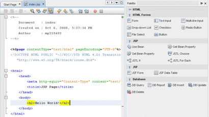
Click to Expand
- Click Save from the File menu.
To Deploy Portlets to WebSynergy Server
- Right-click the project name and choose Run from the pop-up menu.
Figure 11 Deploying Portlets to WebSynergy Server
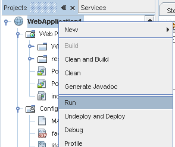
- Again, right-click on the project and choose Undeploy and Deploy from the pop-up
menu.
Figure 12 Deploying Portlets to WebSynergy Server
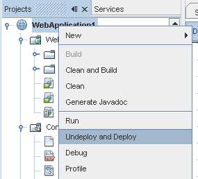
- Click on the Services tab.
The services tab displays all the projects and the associated portlets deployed on
WebSynergy Server. In this example, WebApplication1 is the name of the project and HelloWorld
is the name of the portlet. You can find WebApplication1.HelloWorld under portlets.
- Right-click the portlet name and select Show Portlet from the pop-up manu.
In our example, right-click on WebApplication1.HelloWorld.
Figure 13 Deploying Portlets to WebSynergy Server
It opens the Project WebSynergy welcome page.
Figure 14 Deploying Portlets to WebSynergy Server
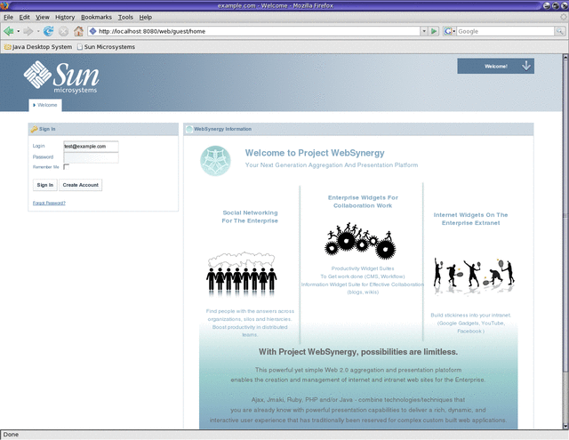
Click to Expand
- Login to Project WebSynergy and choose Add Application from the main menu.
Figure 15 Deploying Portlets to WebSynergy Server
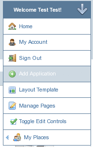
The Add Application window appears.
Figure 16 Deploying Portlets to WebSynergy Server
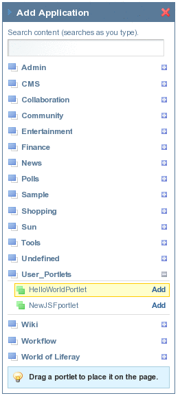
- Click on User_Portlets to expand the list of user created portlets.
- Click the Add button next to the HelloWorldPortlet entry.
The HelloWorldPortlet is added to the application.
Figure 17 Deploying Portlets to WebSynergy Server

To Create a new JSR 168/286 Portlet
- Right click the project name, and choose New —> Other, or press Ctrl+N.
Figure 18 Creating a new JSR 168/286 Portlet

The New File window appears.
Figure 19 Creating a new JSR 168/286 Portlet
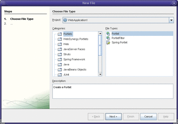
Click to Expand
- Select 'Portlets' in the 'Categories' list and 'Portlet' in the 'File Types' list,
and click Next.
The New Portlet window appears.
Figure 20 Creating a new JSR 168/286 Portlet
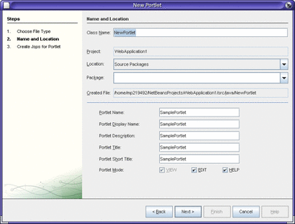
Click to Expand
- Specify a name for the portlet and click Next.
To create Edit and Help mode portlet pages, leave the EDIT and HELP options
selected.
- Click Finish.
The New File window appears.
- Select the 'Create Jsps' option and click Finish.
Figure 21 Creating a new JSR 168/286 Portlet
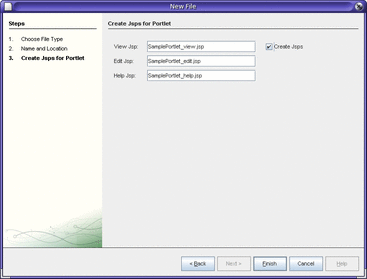
Click to Expand
The <class-name>.java file is created.
Figure 22 Creating a new JSR 168/286 Portlet
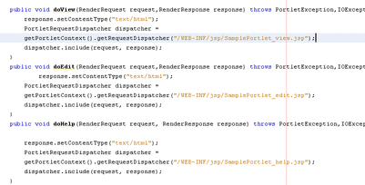
Click to Expand
The files are listed under WEB-INF/jsp.
Figure 23 Creating a new JSR 168/286 Portlet
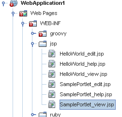
- To edit a file, right-click the file name and choose Open from the
pop-up menu.
Figure 24 Creating a new JSR 168/286 Portlet
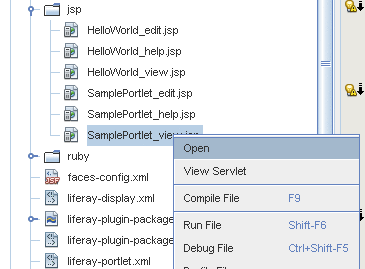
An edit window containing the file content is displayed.
Figure 25 Creating a new JSR 168/286 Portlet
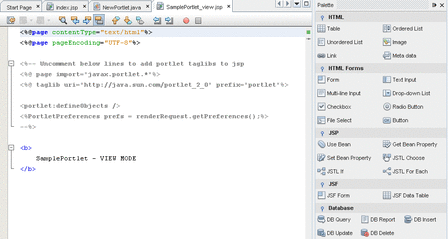
Click to Expand
- When you have finished making changes, choose Save from the File menu.
- Run and deploy the portlet.
To find out how to run and deploy portlets, see To Deploy portlets to WebSynergy Server.
Creating VisualWeb JSF Portlets and Pages
When you are creating a JSF portlet, a JSF page is created
along with it. It is possible to create more portlet pages for the
same portlet.
To Create a VisualWeb JSF Portlet
- Right-click the project name and choose New —> VisualWeb JSF Portlet Page.
- Specify the file and folder name.
- Select the Create a New Portlet option, and specify the name of the
portlet, as shown in the figure.
In the example, the name of the portlet is NewJSFportlet, and the name
of the portlet is PortletPage1. By default, the portlet display name, the description, and
the title are the same as the portlet name, but you can set
different values for these attributes.
Figure 26 Creating a VisualWeb JSF Portlet
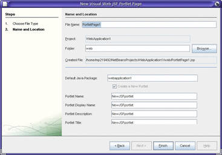
Click to Expand
- Click Finish.
You can see that the JSF portlet (in the example, NewJSFportlet) and the
JSP file for the portlet page (in the example, PortletPage1) are listed under portlet.xml.
By default, the portlet page is set to View Mode.
Figure 27 Creating a VisualWeb JSF Portlet
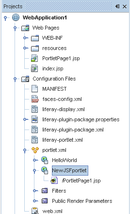
- Design your portlet page by using the options available on the palette.
Figure 28 Creating a VisualWeb JSF Portlet
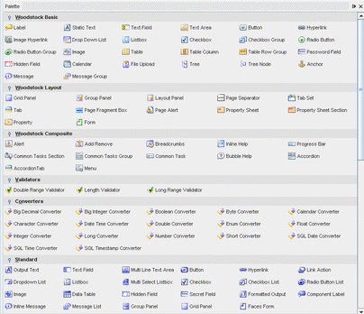
Click to Expand
- Choose Save from the File menu.
- Run and Deploy the portlet to WebSynergy.
To find out how to run and deploy portlets, see To Deploy portlets to WebSynergy Server.
To Create an Edit or Help Mode JSF Page
- Right-click the project name, and choose New —> VisualWeb JSF Portlet Page.
Note: When you select the Create a New Portlet option, it prompts the system to create a
new portlet, along with creating a portlet page. You need to leave the
checkbox unchecked to create only a page. The fields, such as the portlet
name, portlet display name, and the portlet title are disabled when the checkbox
is unchecked.
- Specify the file name and the folder name.
Figure 29 Creating an Edit or Help Mode JSF Page
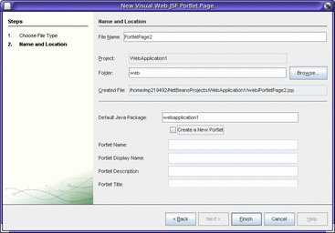
Click to Expand
- Click Finish.
The new JSP file PortletPage2.jsp has been created. It is listed under
the Web Pages folder.
Figure 30 Creating an Edit or Help Mode JSF Page

- Set the portlet page as an Edit Mode or Help Mode page.
- The following is the procedure to set a portlet page for Edit Mode:
- Right-click the JSP file name.
Choose Set as Initial Page > New JSF Portlet, and then select either Edit Mode Page or Help Mode Page.
Figure 31 Creating an Edit or Help Mode JSF Page
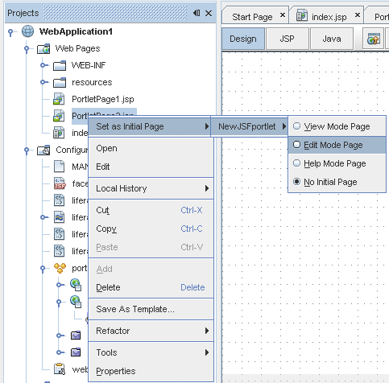
The portlet page PortletPage2.jsp is now associated to the portlet NewJSFportlet and listed
under portlet.xml.
Figure 32 Creating an Edit or Help Mode JSF Page
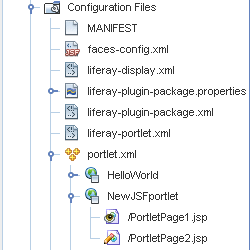
Note: Even when you delete a portlet page, the portlet entry remains in the
portlet.xml file. For this, you need to manually delete the portlet entry from
the portlet.xml file.
- The following is the procedure to set a portlet page for Help Mode:
- Right-click on the JSP file and navigate to select the Help Mode Page
radio-button.
Figure 33 Creating an Edit or Help Mode JSF Page
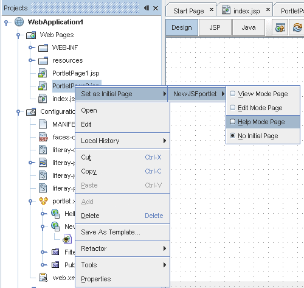
Now, the same JSF portlet page is set to Help Mode. A
single portlet page can be associated with more than one portlet. You can
assign a different mode for the portlet page for different portlets. In our
example, the portlet page PortletPage2.jsp is associated to the portlet NewJSFportlet. You can
find it under portlet.xml.
Figure 34 Creating an Edit or Help Mode JSF Page
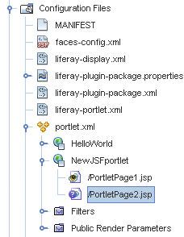
- Design your portlet page, by using the options available on the palette.
- Choose Save from the File menu.
Creating Ruby/PHP/Groovy Portlets
The NetBeans IDE 6.5 software gives you the option to create portlets using
Ruby, PHP, and Groovy programming languages.
The following sections explain the procedures to create Ruby, PHP, and Groovy portlets
and portlet pages:
To Create a Ruby Portlet
- Right-click the project name and choose New —> Other from the pop-up menu,
or press Ctrl-N.
Figure 35 Creating a Ruby Portlet
The New File window appears.
Figure 36 Creating a Ruby Portlet
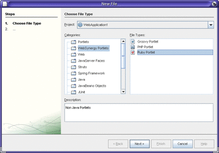
Click to Expand
- Select WebSynergy Portlets from the Categories list and Ruby Portlet as the file
type, and click Next.
The New Portlet window appears.
- Specify the file, folder, and portlet name.
Figure 37 Creating a Ruby Portlet
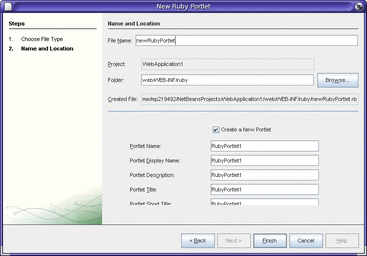
Click to Expand
A folder named ruby is created under the WEB-INF folder in the project.
The ruby folder contains two files related to the portlet, named in the
pattern <ruby-portlet>.rb and <ruby-portlet>_action.rb. The <ruby-portlet>.rb file is also listed under portlet.xml.
Figure 38 Creating a Ruby Portlet
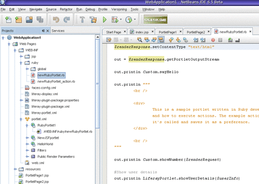
Click to Expand
- Click Finish
A Ruby portlet is created in View Mode.
- Edit and make changes to the <ruby-portlet>.rb and <ruby-portlet>_action.rb files.
The <ruby-portlet>_action.rb file is executed whenever an action occurs in the project that contains
the ruby portlet.
- Choose Save from the File menu.
- Run and deploy the portlet to WebSynergy.
For information about how to run and deploy portlets, see To Deploy portlets to WebSynergy Server.
To Create an Edit Mode or Help Mode Ruby Portlet
- Select Ruby Portlet as the file type, and click Next.
- Specify a file name and folder name.
Note: When you are creating only a portlet page, leave the Create a New Portlet checkbox
unchecked.
Figure 39 Creating an Edit Mode or Help Mode Ruby Portlet
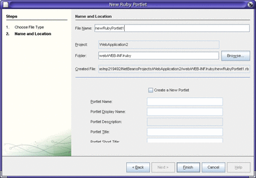
Click to Expand
- Click Finish.
The <ruby-portlet>.rb file is created and appears under the Ruby folder.
Note: The portlet.xml file stores the details of the portlet and the portlet page.
Any accidental deletion of the portlet.xml file, leads to some issues in
creating a portlet page. As shown in the below figure, when you are
trying to create a portlet page, you may see an error on the
screen, saying Invalid Portlet Name.
Figure 40 Creating an Edit Mode or Help Mode Ruby Portlet
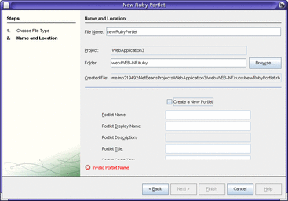
Click to Expand
- Set the portlet page to Edit or Help mode.
For the details of the procedure to set a portlet to Edit or
Help mode, refer to the section on Creating a Edit or Help Mode JSF Page.
- Edit and make changes to the <ruby-portlet>.rb file.
- When you have finished making changes, choose Save from the File menu.
To Create a PHP Portlet
- Right-click the project name and choose New —> Other from the pop-up menu,
or press Ctrl-N.
Figure 41 Creating a PHP Portlet
The New File window appears.
Figure 42 Creating a PHP Portlet
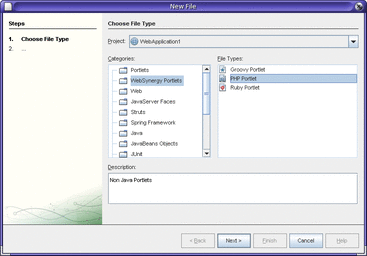
Click to Expand
- Select WebSynergy Portlets from the Categories list and PHP Portlet as the file
type, and click Next.
- Specify the file, folder, and portlet name.
Figure 43 Creating a PHP Portlet
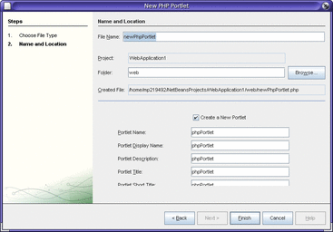
Click to Expand
- Click Finish.
The index.php and <php-portlet>.php files are created and appear under the resources
folder. The index.php page should not be deleted for the portlet to work.
The <php-portlet>.php file has View Mode.
Figure 44 The Newly Created PHP Portlet file
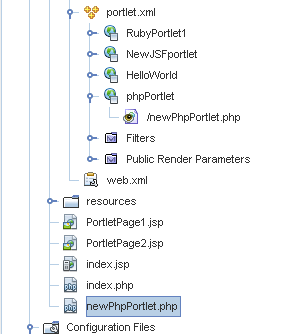
- Edit the <php-portlet>.php page, as needed.
You can use the HTML and the HTML Forms objects from the palette
in modifying the page.
Figure 45 Creating a PHP Portlet
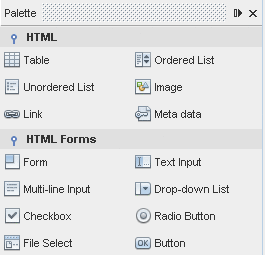
- When you have finished making changes, choose Save from the File menu.
- Run and deploy the portlet to WebSynergy.
For information on how to run and deploy portlets, see To Deploy portlets to WebSynergy Server.
To Create an Edit Mode or Help Mode PHP Portlet Page
- Follow steps 1 to 3 of the procedure on Creating a PHP Portlet, with the
exception of leaving the Creating a New Portlet checkbox unchecked.
Figure 46 Creating an Edit Mode or Help Mode PHP Portlet Page
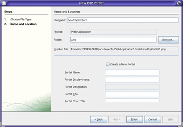
Click to Expand
- Click Finish.
The <php-portlet>.php file is created under the resources folder.
Figure 47 Creating an Edit Mode or Help Mode PHP Portlet Page
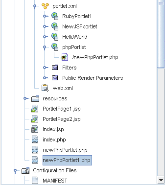
- Set the portlet page to Edit or Help mode.
For the details of the procedure to set a portlet to Edit or
Help mode, refer to the section on Creating a Edit or Help Mode JSF Page.
- Edit the <php-portlet>.php page, as needed.
You can use the HTML and HTML Forms objects from the palette in creating
the php page.
- When you have finished making changes, choose Save from the File menu.
To Create a Groovy Portlet
- Right-click the project name, and choose New —> Other from the file menu,
or press Ctrl-N.
Figure 48 Creating a Groovy Portlet
The New File window appears.
Figure 49 Creating a Groovy Portlet
Click to Expand
- Select WebSynergy Portlets from the Categories list and Groovy Portlet as the file
type, and click Next.
- Specify the file, folder, and portlet name.
Figure 50 Creating a Groovy Portlet
Click to Expand
- Click Finish.
The Groovy folder is created and appears under the WEB-INF folder in the project.
The Groovy folder contains the <groovy-portlet>.groovy and <groovy-portlet>.action.groovy files. The <groovy-portlet>.action.groovy file
is executed whenever some action occurs in the project.
Figure 51 Creating a Groovy Portlet
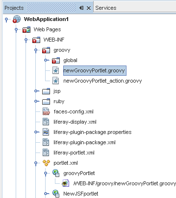
- Edit the <groovy-portlet>.groovy and the <groovy-portlet>_action.groovy files, as needed.
- Click Save from the File menu.
- Run and deploy the portlet to WebSynergy.
For information about how to run and deploy portlets, see To Deploy portlets to WebSynergy Server.
To Create an Edit Mode or Help mode Groovy Portlet Page
- Follow steps 1 to 3 of the procedure on Creating a Groovy Portlet, with the
exception of leaving the Creating a New Portlet checkbox unchecked.
Figure 52 Creating an Edit Mode or Help mode Groovy Portlet Page
Click to Expand
- Click Finish.
The <groovy-portlet>.groovy file is created under the Groovy folder.
Figure 53 Creating an Edit Mode or Help mode Groovy Portlet Page
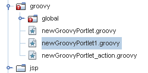
- Set the portlet page to Edit or Help mode.
For the details of the procedure to set a portlet to Edit or
Help mode, refer to the section on Creating a Edit or Help Mode JSF Page.
- Edit and make changes to the groovy-portlet>.groovy file.
- Click Save from the File menu.
Related Links